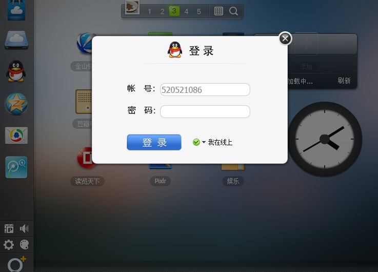

前面我们了解了单例模式的一些实现办法，本节我们来了解惰性单例。
惰性单例指的是在需要的时候才创建对象实例。惰性单例是单例模式的重点，这种技术在实际开发中非常有用，有用的程度可能超出了我们的想象，实际上在本章开头就使用过这种技术，instance 实例对象总是在我们调用Singleton.getInstance 的时候才被创建，而不是在页面加载好的时候就创建，代码如下：
Singleton.getInstance = (function(){
var instance = null;
return function( name ){
if ( !instance ){
instance = new Singleton( name );
}
return instance;
}
})();
不过这是基于“类”的单例模式，前面说过，基于“类”的单例模式在JavaScript中并不适用，下面我们将以WebQQ的登录浮窗为例，介绍与全局变量结合实现惰性的单例。
假设我们是WebQQ的开发人员（网址是web.qq.com），当点击左边导航里QQ头像时，会弹出一个登录浮窗（如图4-1所示），很明显这个浮窗在页面里总是唯一的，不可能出现同时存在两个登录窗口的情况。

图 4-1
第一种解决方案是在页面加载完成的时候便创建好这个div浮窗，这个浮窗一开始肯定是隐藏状态的，当用户点击登录按钮的时候，它才开始显示：
<html>
<body>
<button id="loginBtn">登录</button>
</body>
<script>
var loginLayer = (function(){
var div = document.createElement( 'div' );
div.innerHTML = '我是登录浮窗';
div.style.display = 'none';
document.body.appendChild( div );
return div;
})();
document.getElementById( 'loginBtn' ).onclick = function(){
loginLayer.style.display = 'block';
};
</script>
</html>
这种方式有一个问题，也许我们进入WebQQ只是玩玩游戏或者看看天气，根本不需要进行登录操作，因为登录浮窗总是一开始就被创建好，那么很有可能将白白浪费一些DOM节点。
现在改写一下代码，使用户点击登录按钮的时候才开始创建该浮窗：
<html>
<body>
<button id="loginBtn">登录</button>
</body>
<script>
var createLoginLayer = function(){
var div = document.createElement( 'div' );
div.innerHTML = '我是登录浮窗';
div.style.display = 'none';
document.body.appendChild( div );
return div;
};
document.getElementById( 'loginBtn' ).onclick = function(){
var loginLayer = createLoginLayer();
loginLayer.style.display = 'block';
};
</script>
</html>
虽然现在达到了惰性的目的，但失去了单例的效果。当我们每次点击登录按钮的时候，都会创建一个新的登录浮窗div。虽然我们可以在点击浮窗上的关闭按钮时（此处未实现）把这个浮窗从页面中删除掉，但这样频繁地创建和删除节点明显是不合理的，也是不必要的。
也许读者已经想到了，我们可以用一个变量来判断是否已经创建过登录浮窗，这也是本节第一段代码中的做法：
var createLoginLayer = (function(){
var div;
return function(){
if ( !div ){
div = document.createElement( 'div' );
div.innerHTML = '我是登录浮窗';
div.style.display = 'none';
document.body.appendChild( div );
}
return div;
}
})();
document.getElementById( 'loginBtn' ).onclick = function(){
var loginLayer = createLoginLayer();
loginLayer.style.display = 'block';
};